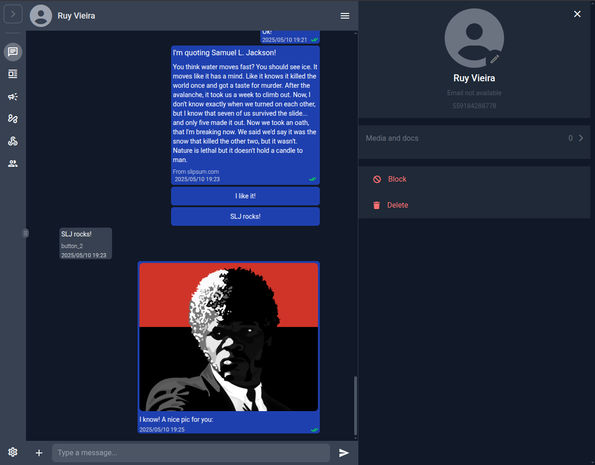
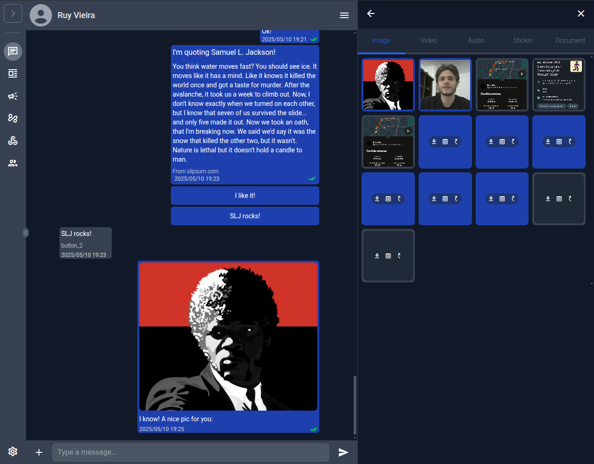
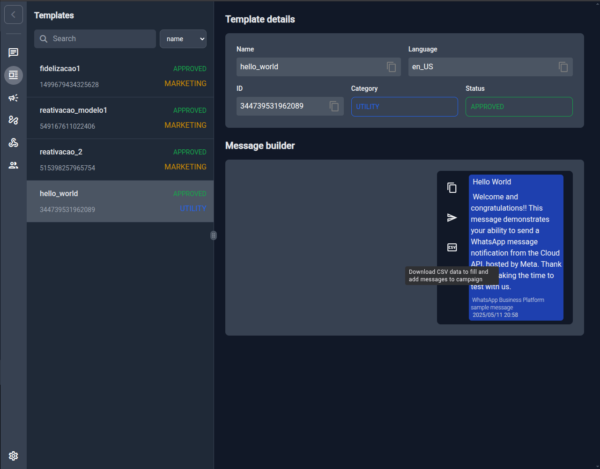
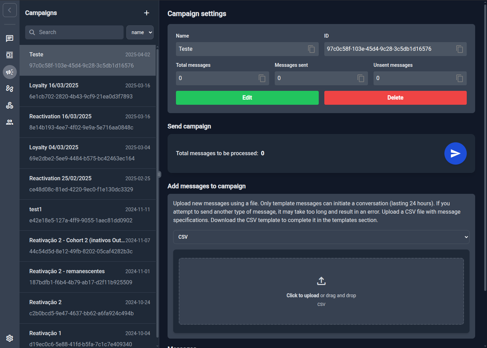
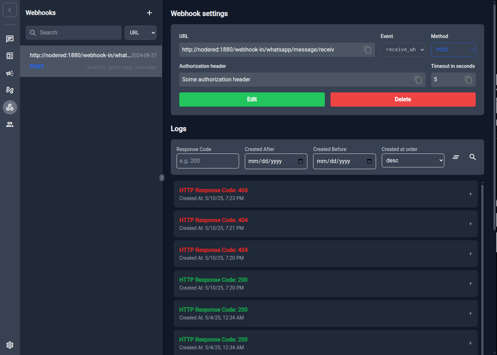

üñ•Ô∏è wacraft¬†UI Walkthrough
Welcome to a quick tour of the wacraft‑client interface. This guide covers the daily workflow for operators and admins, from chatting with users to sending bulk campaigns and wiring automations.
1 — Layout at a glance

| Area | What you’ll find |
|---|---|
| (A) Sidebar | Vertical icons for Chats, Templates, Campaigns, Webhooks, Users, Settings. Hit 1–7 to jump via keyboard. |
| (B) List panel | Context‑aware list (chats, templates, etc.). Supports search and column sort. |
| (C) Workspace | Main content: conversations, builders, settings. |
| (D) Utility bar | Per‑page actions (menu, filter, CSV export, etc.). |
| (E) Composer / Footer | Message input or save / edit buttons. |
Keyboard power‑users: press Ctrl / anywhere to open the shortcut cheat‑sheet.

2 — Chats & Conversation tools
2.1 Live chat

- Hover and click the corner or press Enter to open message options: reply, mark as read, view metadata or add reaction.
- Click the hamburger menu (⋮) for conversation options: contact details, shared media and message search.
2.2 Contact details & Media gallery
| Details panel | Media & docs |
|---|---|
|  |  |
Both panes slide in from the right without leaving the chat context.
3 — Account & Local settings

- Read control: decide whether read receipts are manual or synced from the server.
- Theme switcher: Light, Dark, or System (auto).
- Auto preview & mark as read: tweak message behaviour only for your browser; doesn’t affect other agents.
4 — Templates ➡️ CSV ➡️ Campaigns
The fastest way to launch a bulk send is Template → CSV → Campaign.
- Open Templates in the sidebar (hotkey¬†4). Hover a template and click the üìÑ CSV button.

- A CSV is downloaded with the exact variables required by that template. Fill it: one row per recipient.
messaging_product,recipient_type,to,type,template.name,template.language.code,template.components
whatsapp,individual,1111111111,template,hello_world,en_US,[]
whatsapp,individual,2222222222,template,hello_world,en_US,[]
whatsapp,individual,3333333333,template,hello_world,en_US,[]
-
Go to Campaigns (hotkey 5) and ➕ New Campaign. Give it a name.
-
In Add messages to campaign drag‑and‑drop the CSV or click to upload.

- Review totals, then hit the blue Send ▶️ button. Status updates live (messages sent / unsent). That’s it – campaign en‑route!
Tip: You can download any template’s CSV, copy rows across files and reuse them later; IDs are preserved.
5 — Webhooks & Logs

- Register outbound events (e.g. receive_whatsapp_message) with URL, timeout and optional auth header.
- Built‑in log viewer with code/filter/search to track success and failures.
6 — Power navigation cheatsheet
| Task | Shortcut |
|---|---|
| Jump to sidebar item 1‑7 | 1 … 7 |
| Global search | Ctrl Shift F |
| Focus text input in chat | Ctrl Y |
| Open Help / Shortcuts | Ctrl / |
| Reply to message | Ctrl R |
| Open message data | Ctrl D |
Shift Esc closes any modal/dialog instantly.
7 — What’s next?
- Wire Node‑RED automations → see Node‑RED Integration.
- Build CSV campaigns at scale with the Campaigns API.
- Explore advanced search and keyboard workflows – you can operate the whole client without a mouse!
Happy messaging üöÄ